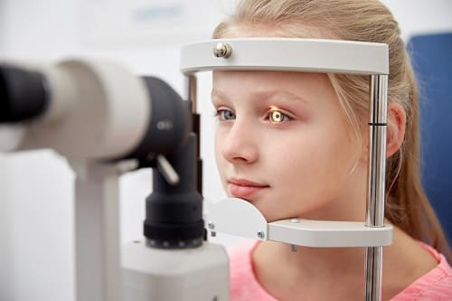

Поцарапанный или проколотый глаз может быть поводом для сильного беспокойства родителей и довольно болезненным для детей. Но все же такая травма не всегда является экстренной ситуацией. Существуют два типа царапин глаза. Одни причиняют боль и требуют лечения, а другие — нет.
Царапина роговицы. Вот как определить, поцарапана ли у вашего ребенка роговица (цветная часть глаза):
• Боль. Царапина роговицы причиняет сильную боль во время моргания, поскольку внутренняя поверхность века цепляется за нее. Даже крошечная царапина будет причинять боль. Когда глаз закрыт, боли, как правило, нет.
• Ощущение песка в глазах. Если вы осматриваете глаз и веки и не видите там инородного тела, но ваш ребенок утверждает, что там что-то есть, это может быть царапина роговицы.
• Видимое слепое пятно. Поверхность роговицы, как правило, гладкая и блестящая. Хотя вы не сможете увидеть крохотную царапину, вы, возможно, заметите матовую линию или пятно царапины на роговице, если они будут достаточно велики.
• Красные глаза. Сильная боль приведет к тому, что белки глаз станут очень красными или раздраженными.
Царапина на белке глаза. В белке глаза нет болевых нервов. Если глаз вашего ребенка поцарапали или прокололи, но ребенок не жалуется на боль, возможно, травма произошла в области белка. При этом типе повреждения лечение не требуется.
ДИАГНОСТИКА
Царапину роговицы может определить врач или в отделении неотложной помощи при флуоресцентном исследовании глаза (в глаз капают не причиняющий боли желтый раствор). Врач посветит специальным «ультрафиолетовым светом» (при котором белая одежда светится в темной комнате) в глаз, и царапины на роговице будут светиться ярко-желтым цветом. Если вы подозреваете, что у вашего ребенка царапина на роговице, лучше провести обследование глаз, чем просто позвонить врачу и получить лечение по телефону. У больших царапин больше шансов подхватить инфекцию и дольше залечиваться, и они могут стать хронической проблемой. Поэтому вам и вашему врачу важно знать, с чем вы имеете дело. Если ребенок поцарапал роговицу вечером или ночью, позвоните своему врачу, чтобы он порекомендовал вам капли, которые нужно начать капать сразу же, а утром первым делом отведите ребенка к врачу.

ЛЕЧЕНИЕ
Царапины роговицы, как правило, заживают в течение 1—3 дней без всякого лечения. Тем не менее за это время они могут инфицироваться, поэтому 2—3 дня надо применять рецептурные глазные капли или мазь с антибиотиком. Инфицированные царапины роговицы хуже заживают и могут повлиять на зрение. Вы и ваш врач должны осмотреть глаз спустя 3 дня, чтобы убедиться, что царапина зажила. Если она не проходит, ваш врач направит вас к офтальмологу для назначения дальнейшего лечения.
Полезно держать глаза закрытыми и давать им отдыхать, чтобы уменьшить раздражение царапины. Дети старшего возраста и взрослые могут носить для этого еще и глазную повязку. Детей 1 младшего возраста, которые не хотят носить повязку, не надо заставлять это делать; глаз достаточно хорошо залечится и без нее. |
Здоровье ребенка от докторов Сирс / Сирс У. и др.